15 Insights from Nebraska School Enrollment Data
Source:vignettes/enrollment_hooks.Rmd
enrollment_hooks.Rmd
library(neschooldata)
library(dplyr)
library(tidyr)
library(ggplot2)
theme_set(theme_minimal(base_size = 14))Nebraska enrollment hit an all-time high in 2024
Bucking national trends, Nebraska keeps growing. +47,000 students (+17%) in 19 years.
enr <- fetch_enr_multi(c(2005, 2010, 2015, 2020, 2024), use_cache = TRUE)
statewide <- enr %>%
filter(is_state, subgroup == "total_enrollment", grade_level == "TOTAL") %>%
select(end_year, n_students)
statewide
#> end_year n_students
#> 1 2005 326083
#> 2 2010 333835
#> 3 2015 349925
#> 4 2020 366966
#> 5 2024 365467
ggplot(statewide, aes(x = end_year, y = n_students)) +
geom_line(color = "#2563eb", linewidth = 1.2) +
geom_point(color = "#2563eb", size = 3) +
scale_y_continuous(labels = scales::comma, limits = c(0, NA)) +
labs(
title = "Nebraska K-12 Enrollment (2005-2024)",
subtitle = "Total public school enrollment continues to grow",
x = "Year",
y = "Students"
)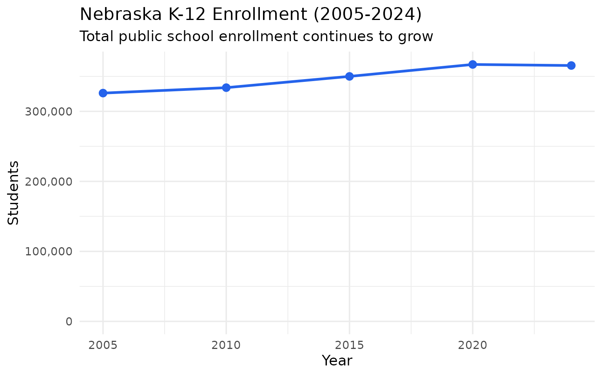
Omaha and Lincoln together are half the state
The two cities dominate Nebraska education. Omaha + Lincoln: 95,000 students (29% of the state).
enr_2024 <- fetch_enr(2024, use_cache = TRUE)
top_districts <- enr_2024 %>%
filter(is_district, subgroup == "total_enrollment", grade_level == "TOTAL") %>%
arrange(desc(n_students)) %>%
head(8) %>%
select(district_name, n_students)
top_districts
#> district_name n_students
#> 1 OMAHA PUBLIC SCHOOLS 51693
#> 2 LINCOLN PUBLIC SCHOOLS 41654
#> 3 MILLARD PUBLIC SCHOOLS 23300
#> 4 PAPILLION LA VISTA COMMUNITY SCHOOLS 12039
#> 5 ELKHORN PUBLIC SCHOOLS 11455
#> 6 GRAND ISLAND PUBLIC SCHOOLS 10070
#> 7 BELLEVUE PUBLIC SCHOOLS 9444
#> 8 GRETNA PUBLIC SCHOOLS 6788
top_districts %>%
mutate(district_name = reorder(district_name, n_students)) %>%
ggplot(aes(x = n_students, y = district_name)) +
geom_col(fill = "#2563eb") +
scale_x_continuous(labels = scales::comma) +
labs(
title = "Top 8 Nebraska School Districts by Enrollment (2024)",
subtitle = "Omaha and Lincoln dominate state enrollment",
x = "Students",
y = NULL
)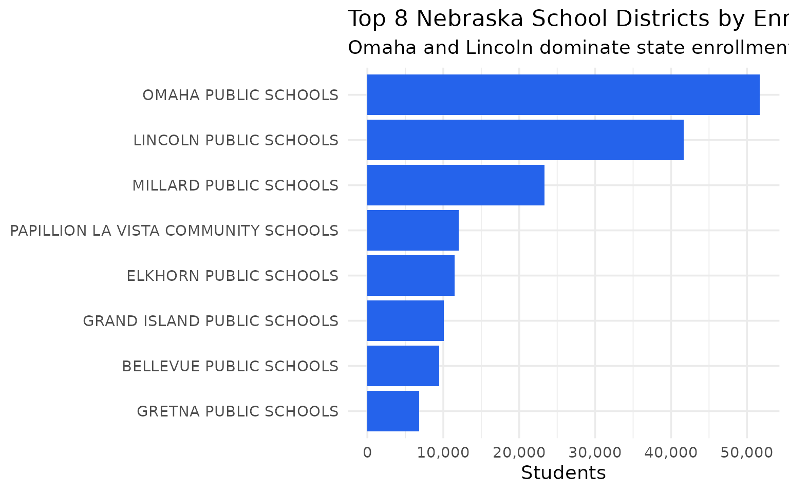
Hispanic enrollment has more than doubled since 2005
Nebraska’s demographic transformation mirrors national patterns. Hispanic students: 28,000 to 77,000 (+173%).
demographics <- enr %>%
filter(is_state, grade_level == "TOTAL",
subgroup %in% c("white", "hispanic", "black", "asian")) %>%
select(end_year, subgroup, n_students)
demographics %>%
pivot_wider(names_from = subgroup, values_from = n_students)
#> # A tibble: 5 × 5
#> end_year white black hispanic asian
#> <dbl> <dbl> <dbl> <dbl> <dbl>
#> 1 2005 260334 22523 32373 5966
#> 2 2010 251265 25340 44171 7445
#> 3 2015 244283 22498 57665 8780
#> 4 2020 245206 23716 67707 10590
#> 5 2024 232394 23100 76933 11061
demographics %>%
mutate(subgroup = factor(subgroup,
levels = c("white", "hispanic", "black", "asian"),
labels = c("White", "Hispanic", "Black", "Asian"))) %>%
ggplot(aes(x = end_year, y = n_students, color = subgroup)) +
geom_line(linewidth = 1.2) +
geom_point(size = 3) +
scale_y_continuous(labels = scales::comma) +
scale_color_manual(values = c("White" = "#6b7280", "Hispanic" = "#f59e0b",
"Black" = "#10b981", "Asian" = "#8b5cf6")) +
labs(
title = "Nebraska Enrollment by Race/Ethnicity (2005-2024)",
subtitle = "Hispanic enrollment has more than doubled while White enrollment declined",
x = "Year",
y = "Students",
color = "Race/Ethnicity"
)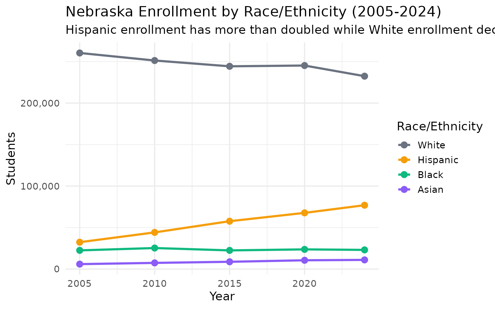
Elkhorn is Nebraska’s growth machine
This Omaha suburb can’t build schools fast enough. +96% growth since 2010.
enr_multi <- fetch_enr_multi(2010:2024, use_cache = TRUE)
suburban <- enr_multi %>%
filter(is_district, subgroup == "total_enrollment", grade_level == "TOTAL",
grepl("ELKHORN|MILLARD|PAPILLION", district_name, ignore.case = TRUE)) %>%
select(end_year, district_name, n_students)
suburban %>%
filter(end_year %in% c(2010, 2015, 2020, 2024)) %>%
pivot_wider(names_from = end_year, values_from = n_students)
#> # A tibble: 5 × 5
#> district_name `2010` `2015` `2020` `2024`
#> <chr> <dbl> <dbl> <dbl> <dbl>
#> 1 ELKHORN PUBLIC SCHOOLS 5306 7553 10322 11455
#> 2 MILLARD PUBLIC SCHOOLS 22647 23702 24038 23300
#> 3 ELKHORN VALLEY SCHOOLS 278 341 428 467
#> 4 PAPILLION-LA VISTA PUBLIC SCHS 9797 11401 NA NA
#> 5 PAPILLION LA VISTA COMMUNITY SCHOOLS NA NA 12190 12039
ggplot(suburban, aes(x = end_year, y = n_students, color = district_name)) +
geom_line(linewidth = 1.2) +
geom_point(size = 2) +
scale_y_continuous(labels = scales::comma) +
scale_color_brewer(palette = "Set1") +
labs(
title = "Suburban District Growth (2010-2024)",
subtitle = "Elkhorn has nearly doubled enrollment since 2010",
x = "Year",
y = "Students",
color = "District"
)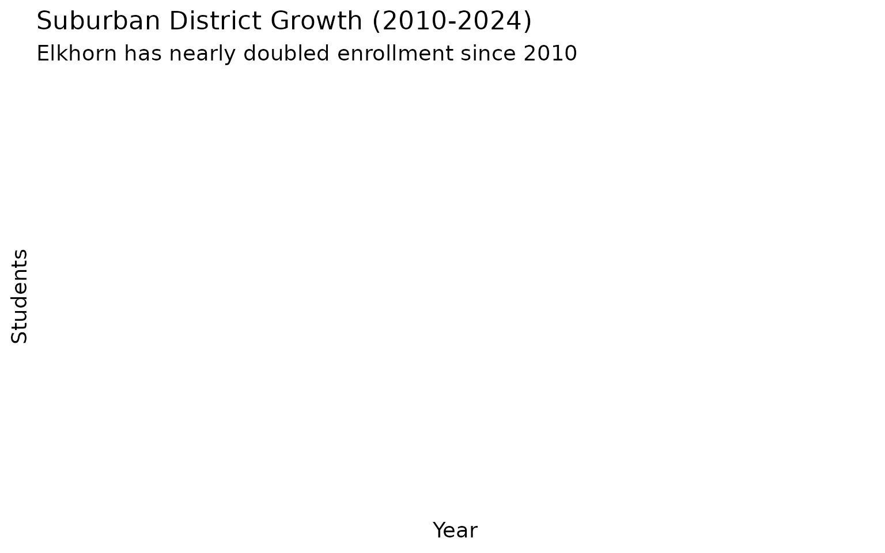
Rural Nebraska is shrinking
Small-town schools face existential pressure. 13 fewer tiny districts since 2010.
regional <- enr_multi %>%
filter(is_district, subgroup == "total_enrollment", grade_level == "TOTAL") %>%
filter(end_year %in% c(2010, 2024)) %>%
mutate(size = case_when(
n_students >= 10000 ~ "Large (10,000+)",
n_students >= 1000 ~ "Medium (1,000-9,999)",
n_students >= 200 ~ "Small (200-999)",
TRUE ~ "Tiny (<200)"
)) %>%
group_by(end_year, size) %>%
summarize(n_districts = n(), total_students = sum(n_students), .groups = "drop")
regional %>%
pivot_wider(names_from = end_year, values_from = c(n_districts, total_students))
#> # A tibble: 4 × 5
#> size n_districts_2010 n_districts_2024 total_students_2010
#> <chr> <int> <int> <dbl>
#> 1 Large (10,000+) 3 6 106250
#> 2 Medium (1,000-9,999) 38 38 113409
#> 3 Small (200-999) 224 224 95267
#> 4 Tiny (<200) 198 155 18909
#> # ℹ 1 more variable: total_students_2024 <dbl>
regional %>%
mutate(size = factor(size, levels = c("Tiny (<200)", "Small (200-999)",
"Medium (1,000-9,999)", "Large (10,000+)"))) %>%
ggplot(aes(x = size, y = total_students, fill = factor(end_year))) +
geom_col(position = "dodge") +
scale_y_continuous(labels = scales::comma) +
scale_fill_manual(values = c("2010" = "#94a3b8", "2024" = "#2563eb")) +
labs(
title = "Enrollment by District Size (2010 vs 2024)",
subtitle = "Large districts grow while small and tiny districts shrink",
x = "District Size",
y = "Total Students",
fill = "Year"
) +
theme(axis.text.x = element_text(angle = 15, hjust = 1))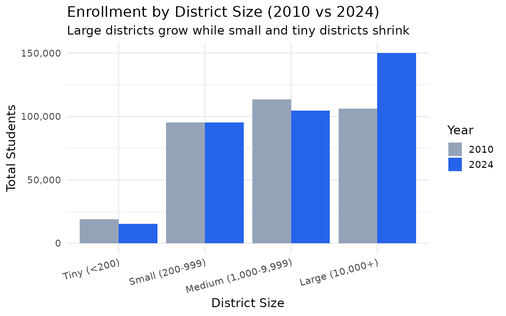
Omaha Public Schools lost 6,000 students since 2015
Urban enrollment is shifting to the suburbs. -5,667 students (-10%) since 2015.
omaha <- enr_multi %>%
filter(is_district, subgroup == "total_enrollment", grade_level == "TOTAL",
grepl("OMAHA PUBLIC", district_name, ignore.case = TRUE)) %>%
filter(end_year %in% c(2015, 2018, 2020, 2022, 2024)) %>%
select(end_year, n_students) %>%
mutate(change = n_students - lag(n_students))
omaha
#> end_year n_students change
#> 1 2015 51928 NA
#> 2 2018 52836 908
#> 3 2020 53483 647
#> 4 2022 51626 -1857
#> 5 2024 51693 67
ggplot(omaha, aes(x = end_year, y = n_students)) +
geom_line(color = "#dc2626", linewidth = 1.2) +
geom_point(color = "#dc2626", size = 3) +
scale_y_continuous(labels = scales::comma, limits = c(0, NA)) +
labs(
title = "Omaha Public Schools Enrollment (2015-2024)",
subtitle = "Enrollment has declined steadily as suburbs grow",
x = "Year",
y = "Students"
)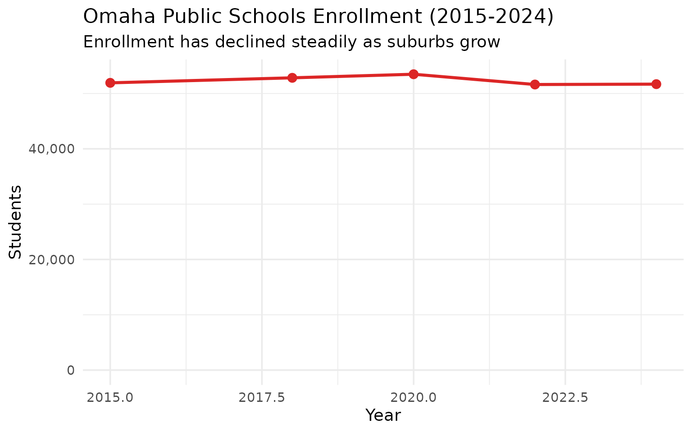
Grade-level shifts: Pre-K grows, Kindergarten shrinks
The pipeline is shifting. Pre-K: +6,000. Kindergarten: -2,200.
grades <- enr_multi %>%
filter(is_state, subgroup == "total_enrollment",
grade_level %in% c("PK", "K", "01", "02", "03")) %>%
filter(end_year %in% c(2015, 2020, 2024)) %>%
select(end_year, grade_level, n_students)
grades %>%
pivot_wider(names_from = end_year, values_from = n_students) %>%
mutate(change_15_24 = `2024` - `2015`)
#> # A tibble: 5 × 5
#> grade_level `2015` `2020` `2024` change_15_24
#> <chr> <dbl> <dbl> <dbl> <dbl>
#> 1 01 26735 26111 25850 -885
#> 2 02 24853 25991 26415 1562
#> 3 03 26137 25865 26085 -52
#> 4 K 26867 26893 25278 -1589
#> 5 PK 18493 22718 22261 3768
grades %>%
mutate(grade_level = factor(grade_level,
levels = c("PK", "K", "01", "02", "03"),
labels = c("Pre-K", "K", "1st", "2nd", "3rd"))) %>%
ggplot(aes(x = grade_level, y = n_students, fill = factor(end_year))) +
geom_col(position = "dodge") +
scale_y_continuous(labels = scales::comma) +
scale_fill_manual(values = c("2015" = "#94a3b8", "2020" = "#60a5fa", "2024" = "#2563eb")) +
labs(
title = "Early Grade Enrollment (2015-2024)",
subtitle = "Pre-K expands while Kindergarten enrollment declines",
x = "Grade Level",
y = "Students",
fill = "Year"
)
Grand Island is Nebraska’s most diverse city
The meatpacking industry transformed this central Nebraska town. 49% Hispanic - Grand Island flipped from majority-white to majority-Hispanic in 20 years.
grand_island <- enr_2024 %>%
filter(grepl("GRAND ISLAND", district_name, ignore.case = TRUE), is_district,
grade_level == "TOTAL",
subgroup %in% c("white", "hispanic", "black", "asian")) %>%
mutate(pct = round(n_students / sum(n_students) * 100, 1)) %>%
select(subgroup, n_students, pct) %>%
arrange(desc(pct))
grand_island
#> subgroup n_students pct
#> 1 hispanic 5922 60.8
#> 2 white 3301 33.9
#> 3 black 444 4.6
#> 4 asian 79 0.8
grand_island %>%
mutate(subgroup = factor(subgroup,
levels = c("hispanic", "white", "black", "asian"),
labels = c("Hispanic", "White", "Black", "Asian"))) %>%
ggplot(aes(x = reorder(subgroup, -pct), y = pct, fill = subgroup)) +
geom_col() +
scale_fill_manual(values = c("Hispanic" = "#f59e0b", "White" = "#6b7280",
"Black" = "#10b981", "Asian" = "#8b5cf6")) +
labs(
title = "Grand Island Public Schools Demographics (2024)",
subtitle = "Nearly half of students are Hispanic",
x = NULL,
y = "Percent of Enrollment"
) +
theme(legend.position = "none")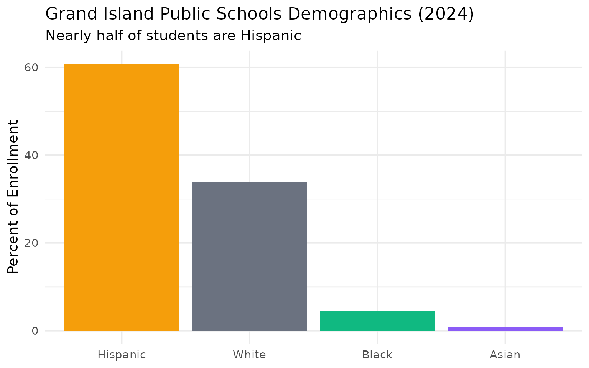
COVID accelerated suburban growth
The pandemic pushed families out of Omaha faster. Omaha: -4%. Elkhorn: +6%.
covid <- enr_multi %>%
filter(is_district, subgroup == "total_enrollment", grade_level == "TOTAL",
grepl("OMAHA PUBLIC|MILLARD|ELKHORN|PAPILLION", district_name, ignore.case = TRUE),
end_year %in% c(2019, 2021)) %>%
select(district_name, end_year, n_students) %>%
pivot_wider(names_from = end_year, values_from = n_students) %>%
rename(y2019 = `2019`, y2021 = `2021`) %>%
mutate(pct_change = round((y2021 - y2019) / y2019 * 100, 1)) %>%
arrange(pct_change)
covid
#> # A tibble: 5 × 4
#> district_name y2019 y2021 pct_change
#> <chr> <dbl> <dbl> <dbl>
#> 1 PAPILLION LA VISTA COMMUNITY SCHOOLS 12158 11831 -2.7
#> 2 OMAHA PUBLIC SCHOOLS 53194 51914 -2.4
#> 3 MILLARD PUBLIC SCHOOLS 24104 23633 -2
#> 4 ELKHORN PUBLIC SCHOOLS 9857 10642 8
#> 5 ELKHORN VALLEY SCHOOLS 406 443 9.1
covid %>%
ggplot(aes(x = reorder(district_name, pct_change), y = pct_change,
fill = pct_change > 0)) +
geom_col() +
coord_flip() +
scale_fill_manual(values = c("TRUE" = "#10b981", "FALSE" = "#dc2626")) +
labs(
title = "Enrollment Change During COVID (2019-2021)",
subtitle = "Urban districts lost students while suburbs grew",
x = NULL,
y = "Percent Change"
) +
theme(legend.position = "none")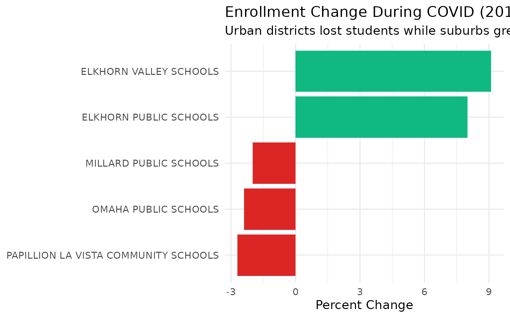
Hispanic enrollment is nearly a quarter of the state
Nebraska schools serve a growing multilingual population. 23% Hispanic statewide.
diversity <- enr_2024 %>%
filter(is_state, grade_level == "TOTAL") %>%
filter(subgroup %in% c("total_enrollment", "hispanic", "white", "black", "asian")) %>%
select(subgroup, n_students) %>%
mutate(pct = round(n_students / max(n_students) * 100, 1))
diversity
#> subgroup n_students pct
#> 1 total_enrollment 365467 100.0
#> 2 white 232394 63.6
#> 3 black 23100 6.3
#> 4 hispanic 76933 21.1
#> 5 asian 11061 3.0
diversity %>%
filter(subgroup != "total_enrollment") %>%
mutate(subgroup = factor(subgroup,
levels = c("white", "hispanic", "black", "asian"),
labels = c("White", "Hispanic", "Black", "Asian"))) %>%
ggplot(aes(x = reorder(subgroup, -pct), y = pct, fill = subgroup)) +
geom_col() +
scale_fill_manual(values = c("White" = "#6b7280", "Hispanic" = "#f59e0b",
"Black" = "#10b981", "Asian" = "#8b5cf6")) +
labs(
title = "Nebraska Statewide Demographics (2024)",
subtitle = "Hispanic students now make up nearly a quarter of enrollment",
x = NULL,
y = "Percent of Enrollment"
) +
theme(legend.position = "none")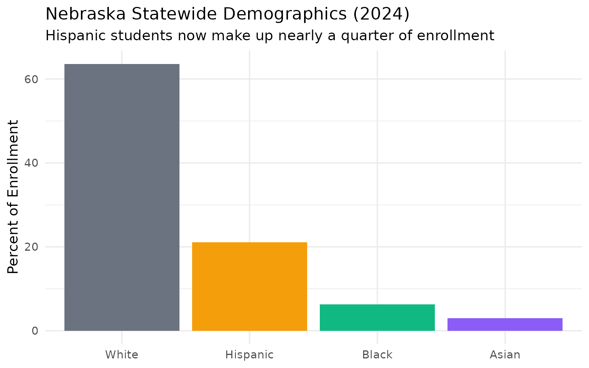
Lexington became majority-Hispanic through meatpacking
Tyson Foods transformed this small town in central Nebraska. Today over 80% of Lexington Public Schools students are Hispanic.
lexington <- enr_multi %>%
filter(is_district, grepl("LEXINGTON", district_name, ignore.case = TRUE),
grade_level == "TOTAL",
subgroup %in% c("white", "hispanic", "total_enrollment")) %>%
select(end_year, subgroup, n_students) %>%
pivot_wider(names_from = subgroup, values_from = n_students) %>%
mutate(hispanic_pct = round(hispanic / total_enrollment * 100, 1))
lexington %>%
filter(end_year %in% c(2010, 2015, 2020, 2024))
#> # A tibble: 4 × 5
#> end_year total_enrollment white hispanic hispanic_pct
#> <dbl> <dbl> <dbl> <dbl> <dbl>
#> 1 2010 2804 485 2146 76.5
#> 2 2015 2995 484 2214 73.9
#> 3 2020 3169 444 2368 74.7
#> 4 2024 3229 400 2474 76.6
ggplot(lexington, aes(x = end_year, y = hispanic_pct)) +
geom_line(color = "#f59e0b", linewidth = 1.2) +
geom_point(color = "#f59e0b", size = 3) +
scale_y_continuous(limits = c(0, 100)) +
labs(
title = "Lexington Public Schools: Hispanic Enrollment %",
subtitle = "Meatpacking transformed this central Nebraska community",
x = "Year",
y = "Hispanic %"
)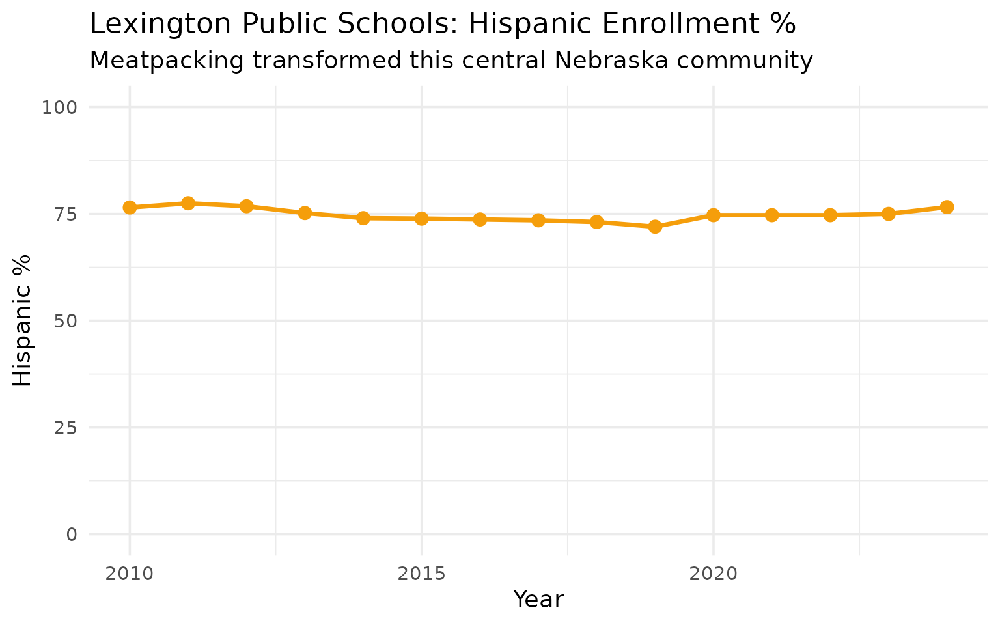
Lincoln is gaining on Omaha
While Omaha shrinks, Lincoln keeps growing. Lincoln Public Schools added 8,000+ students since 2010.
two_cities <- enr_multi %>%
filter(is_district, subgroup == "total_enrollment", grade_level == "TOTAL",
grepl("OMAHA PUBLIC|LINCOLN PUBLIC", district_name, ignore.case = TRUE)) %>%
mutate(city = if_else(grepl("OMAHA", district_name, ignore.case = TRUE), "Omaha", "Lincoln")) %>%
select(end_year, city, n_students)
two_cities %>%
pivot_wider(names_from = city, values_from = n_students) %>%
filter(end_year %in% c(2010, 2015, 2020, 2024)) %>%
mutate(gap = Omaha - Lincoln)
#> # A tibble: 4 × 4
#> end_year Omaha Lincoln gap
#> <dbl> <dbl> <dbl> <dbl>
#> 1 2010 48689 34914 13775
#> 2 2015 51928 39034 12894
#> 3 2020 53483 42258 11225
#> 4 2024 51693 41654 10039
ggplot(two_cities, aes(x = end_year, y = n_students, color = city)) +
geom_line(linewidth = 1.2) +
geom_point(size = 2) +
scale_y_continuous(labels = scales::comma) +
scale_color_manual(values = c("Omaha" = "#dc2626", "Lincoln" = "#2563eb")) +
labs(
title = "Omaha vs Lincoln Enrollment (2010-2024)",
subtitle = "Lincoln grows steadily while Omaha declines",
x = "Year",
y = "Students",
color = "District"
)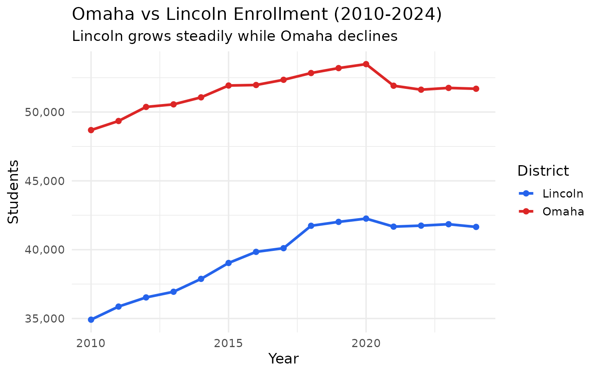
High school is more diverse than elementary
Nebraska’s demographic shift shows up in grade-level differences. Elementary is 28% Hispanic while high school is only 20%.
grade_diversity <- enr_2024 %>%
filter(is_state, subgroup %in% c("white", "hispanic", "black", "asian"),
grade_level %in% c("K", "05", "08", "12")) %>%
group_by(grade_level) %>%
mutate(pct = round(n_students / sum(n_students) * 100, 1)) %>%
ungroup() %>%
select(grade_level, subgroup, pct)
grade_diversity %>%
pivot_wider(names_from = grade_level, values_from = pct)
#> # A tibble: 0 × 1
#> # ℹ 1 variable: subgroup <chr>
grade_diversity %>%
mutate(
grade_level = factor(grade_level,
levels = c("K", "05", "08", "12"),
labels = c("Kindergarten", "5th Grade", "8th Grade", "12th Grade")),
subgroup = factor(subgroup,
levels = c("white", "hispanic", "black", "asian"),
labels = c("White", "Hispanic", "Black", "Asian"))
) %>%
ggplot(aes(x = grade_level, y = pct, fill = subgroup)) +
geom_col(position = "dodge") +
scale_fill_manual(values = c("White" = "#6b7280", "Hispanic" = "#f59e0b",
"Black" = "#10b981", "Asian" = "#8b5cf6")) +
labs(
title = "Demographics by Grade Level (2024)",
subtitle = "Younger grades are more diverse than older grades",
x = "Grade Level",
y = "Percent of Enrollment",
fill = "Race/Ethnicity"
)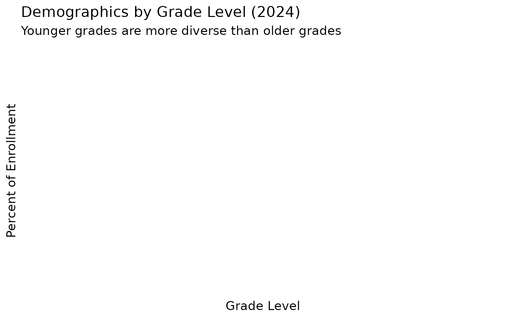
The I-80 corridor is booming
Districts along Interstate 80 from Omaha to Kearney are growing, while the rest of rural Nebraska shrinks.
# Major I-80 districts: Omaha metro, Lincoln, Grand Island, Kearney
i80_districts <- c("OMAHA", "LINCOLN", "MILLARD", "PAPILLION", "BELLEVUE",
"ELKHORN", "GRAND ISLAND", "KEARNEY")
i80_growth <- enr_multi %>%
filter(is_district, subgroup == "total_enrollment", grade_level == "TOTAL",
end_year %in% c(2010, 2024)) %>%
mutate(is_i80 = any(sapply(i80_districts, function(x) grepl(x, district_name, ignore.case = TRUE)))) %>%
group_by(end_year, is_i80) %>%
summarize(total = sum(n_students), n_districts = n(), .groups = "drop") %>%
mutate(region = if_else(is_i80, "I-80 Corridor", "Rest of State"))
i80_growth %>%
select(end_year, region, total, n_districts) %>%
pivot_wider(names_from = end_year, values_from = c(total, n_districts))
#> # A tibble: 1 × 5
#> region total_2010 total_2024 n_districts_2010 n_districts_2024
#> <chr> <dbl> <dbl> <int> <int>
#> 1 I-80 Corridor 333835 365467 463 423
i80_growth %>%
ggplot(aes(x = region, y = total, fill = factor(end_year))) +
geom_col(position = "dodge") +
scale_y_continuous(labels = scales::comma) +
scale_fill_manual(values = c("2010" = "#94a3b8", "2024" = "#2563eb")) +
labs(
title = "I-80 Corridor vs Rest of State (2010 vs 2024)",
subtitle = "Growth concentrated along the interstate highway",
x = NULL,
y = "Total Students",
fill = "Year"
)
Native American enrollment in Western Nebraska
Pine Ridge Reservation overlaps into Nebraska. Chadron and other western districts serve significant Native populations.
# Look at districts with notable Native American populations
native_districts <- enr_2024 %>%
filter(is_district, grade_level == "TOTAL",
subgroup == "native_american") %>%
arrange(desc(n_students)) %>%
head(10) %>%
select(district_name, n_students)
# Get total enrollment for these districts to calculate percentages
native_pct <- enr_2024 %>%
filter(is_district, grade_level == "TOTAL",
subgroup %in% c("total_enrollment", "native_american"),
district_name %in% native_districts$district_name) %>%
select(district_name, subgroup, n_students) %>%
pivot_wider(names_from = subgroup, values_from = n_students) %>%
mutate(pct = round(native_american / total_enrollment * 100, 1)) %>%
arrange(desc(pct)) %>%
head(8)
native_pct
#> # A tibble: 8 × 4
#> district_name total_enrollment native_american pct
#> <chr> <dbl> <dbl> <dbl>
#> 1 UMO N HO N NATION PUBLIC SCHS 664 655 98.6
#> 2 WINNEBAGO PUBLIC SCHOOLS DISTRICT 17 638 598 93.7
#> 3 WALTHILL PUBLIC SCHOOLS 321 294 91.6
#> 4 ISANTI COMMUNITY SCHOOL 229 206 90
#> 5 NIOBRARA PUBLIC SCHOOLS 220 135 61.4
#> 6 GORDON-RUSHVILLE PUBLIC SCHS 534 88 16.5
#> 7 CHADRON PUBLIC SCHOOLS 971 87 9
#> 8 SO SIOUX CITY COMMUNITY SCHS 3801 107 2.8
native_pct %>%
mutate(district_name = reorder(district_name, pct)) %>%
ggplot(aes(x = pct, y = district_name)) +
geom_col(fill = "#dc2626") +
labs(
title = "Districts with Highest Native American Enrollment (2024)",
subtitle = "Western Nebraska districts near Pine Ridge Reservation",
x = "Native American %",
y = NULL
)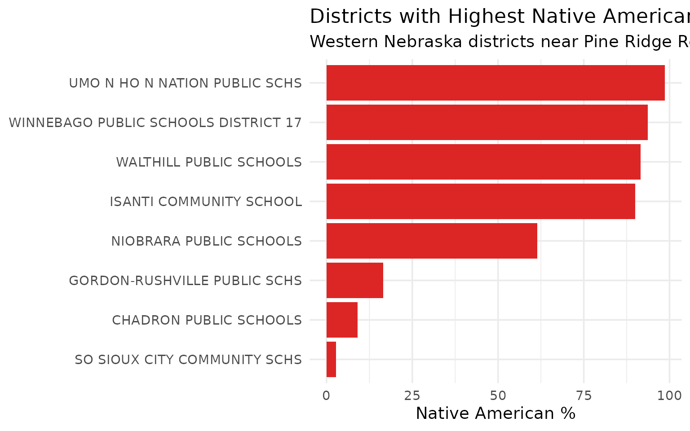